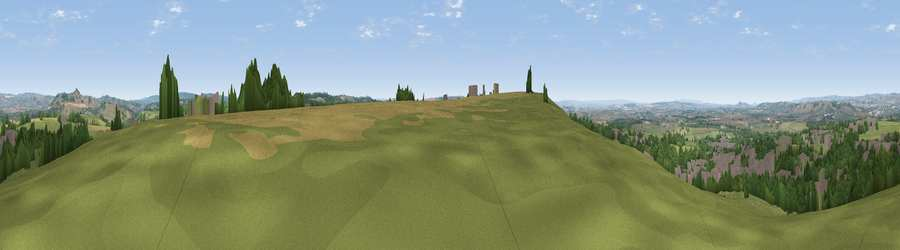

Viewpoint near Castle Cary
#9029 in England · top 14% of its area beats it · near Castle Cary · footpathWhere it is
The exact computed spot (ST 64525 32075). Click the marker for map links.
Public access: a public right of way passes within 57 m of this spot. Computed from Natural England's CRoW access layer and OpenStreetMap rights of way — not the legal definitive map. Always verify locally.
The view, rendered

A 360° render of this exact spot computed from the terrain model, tree cover and land cover — summer colours, afternoon light, calibrated against photographs of famous viewpoints. Real trees, hedges and buildings will differ in detail.
The panorama
Grey silhouette: terrain skyline in each direction (720 bearings, Earth curvature and refraction included). Dashed green: skyline with trees (+15 m) and buildings (+8 m) as obstacles. Blue strip: how far the ground is visible on each bearing.
Where the view opens
Wedge length = distance to the farthest visible ground on that bearing (vegetation-aware). Rings at 10, 25 and 50 km.
What fills the view
54% grassland · 26% woodland · 12% built-up · 8% cropland
Angular shares of the visible panorama (visual magnitude), not map area. Landscape diversity 0.50 (0–1 Shannon).
Key numbers
More beautiful places nearby
The staircase of upgrades: each row has a higher view potential than everything closer. Driving times are estimates from straight-line distance, calibrated against real road routing — check an actual route before setting out.
| Place | Direction | Drive | Score |
|---|---|---|---|
| Viewpoint near Castle Cary | SSW · 1 km | ~2 min | 69.6 |
| Viewpoint near Lamyatt | NNE · 4 km | ~10 min | 77.8 |
| Beacon Batch | NNW · 30 km | ~47 min | 79.4 |
| Lewesdon Hill | SSW · 37 km | ~56 min | 83.3 |
| Beacon Knap | SSW · 45 km | ~66 min | 84.8 |
| The Knoll | SSW · 46 km | ~66 min | 91.0 |
51.08689, -2.50787 · source: screening · position refined by local search. Computed location — check access rights before visiting.